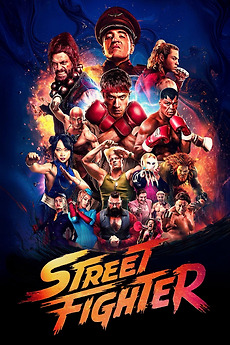
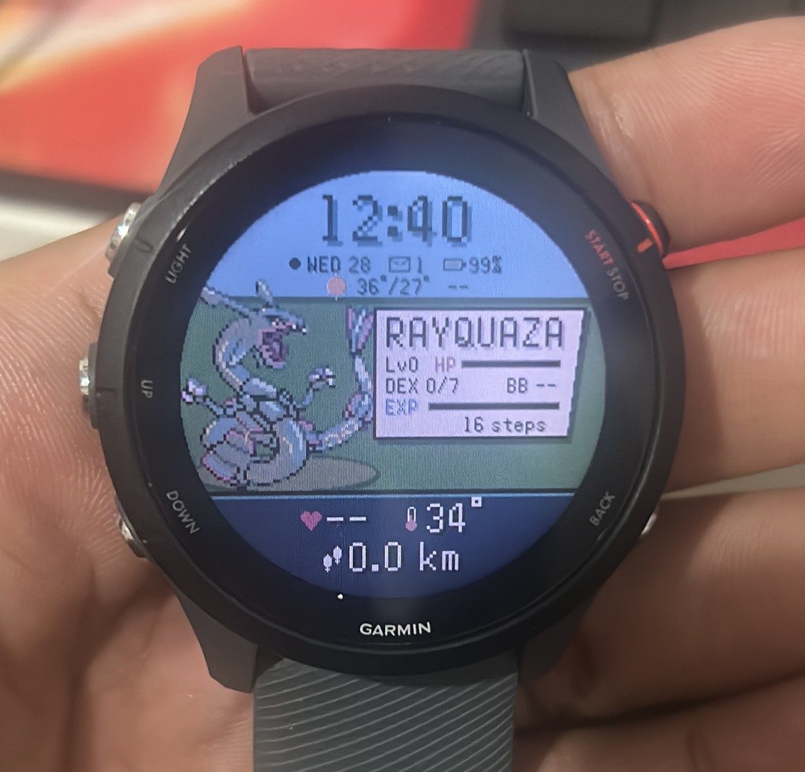
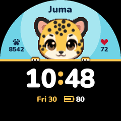

VITORVITOR
AI engineer from Manaus. I build gadgets for my car, my watch and my city.Engenheiro de IA de Manaus. Eu crio gadgets pro meu carro, meu relógio e minha cidade.
▶ RIGHT NOWAGORA
- ON

WATCHEDASSISTIStreet Fighter (2026)★★★½ ♥ · Nov 55 novmy Letterboxd profilemeu perfil no Letterboxd
“os flashbacks de anime são muito bem feitos podia ser o john cena com…”- READINGLENDOCan't Hurt Me: Master Your Mind and Defy the Od…David Goggins · p. 210 of 366p. 210 de 366my Goodreads profilemeu perfil no Goodreads
- MOVINGTREINONight Ride · 5.0 km25 min · 12.1 km/h · 3 PRs · Nov 44 nov
▶ MY PARTYMEU TIME
DAILY
Car CyberdeckCar CyberdeckSpotify as a Pokémon battle on my dashboardO Spotify virando batalha Pokémon no painel do carro

WRISTWatch facesMostradoresPokémon faces I draw for my GarminMostradores de Pokémon que eu desenho pro meu Garmin
CITY
Open RadarsOpen Radarsevery speed camera in Manaus, marked by mecada radar de Manaus, marcado por mim

WRISTHaylou facesMostradores HaylouI cracked a cheap watch to draw on itEu hackeei um relógio baratinho pra desenhar nele
▶ PC BOXCAIXA DO PCall on GitHub ›tudo no GitHub ›
timeseries-analysis-streamlitStreamlit app to evaluate time-series forecasts: MAPE by gr… try ittestar ›
+ 4 more+ 4 outros ▶ WORKTRABALHO
5 years building AI for banks and fintech.5 anos criando IA pra bancos e fintechs.
Qubika · Nubank · EloGroup